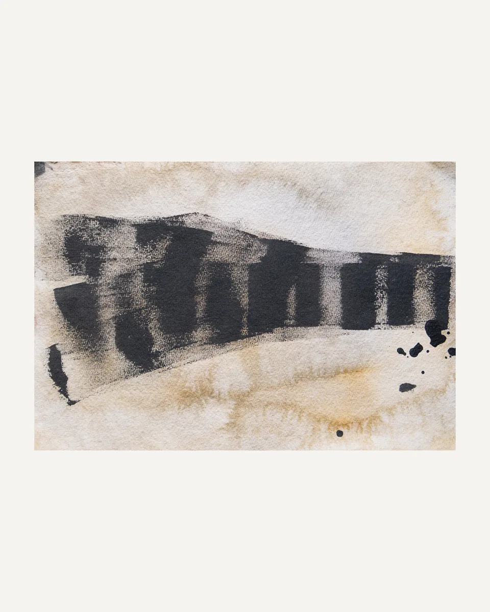
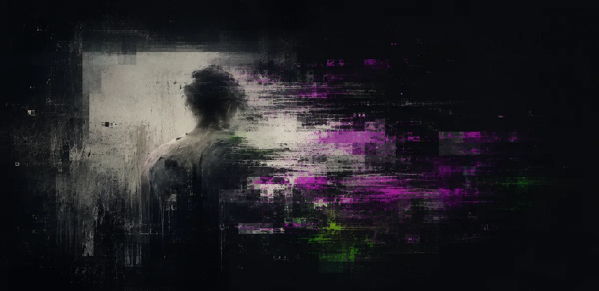

Work

404: Self Not Found
Solo Exhibition
Pulp Society, Okhla
1 February – 20 March 2026
A body of work examining how selfhood is negotiated within digitally mediated systems of prediction, automation, and cognitive offloading.
Read More →
Silhouettes of Shards
Solo Exhibition
Bikaner House, New Delhi
2025
A body of work examining how the self is constructed through ideas of continuity and transition, where identity is understood not as fixed presence but as an ongoing process of becoming across shifting states of experience.
Read More →
selected-artworks
Archive
2023 – Ongoing
A selection of works spanning different projects, mediums, and phases of inquiry.
Read More →
System Input / Output
Conceptual Project
2024 – Ongoing
An interactive digital project that transforms user-submitted images in real time, examining how technological systems mediate perception and visual information.
Read More →